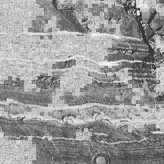
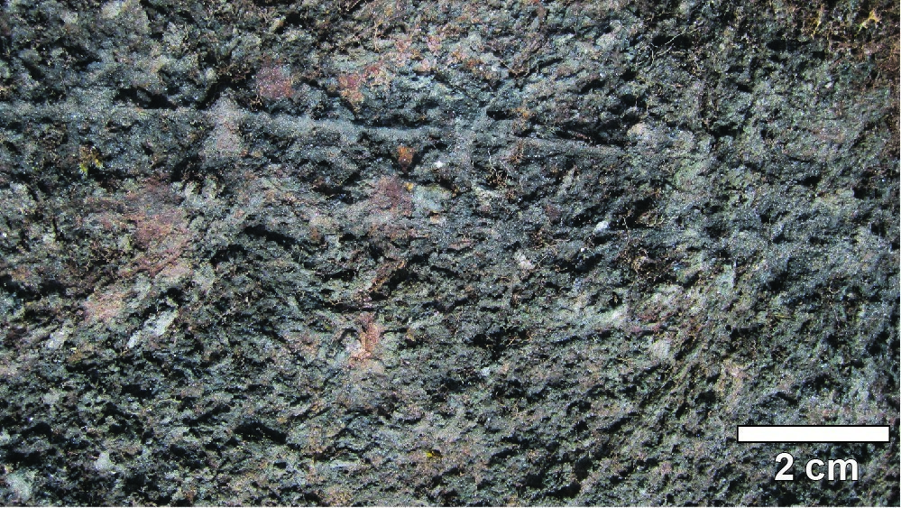
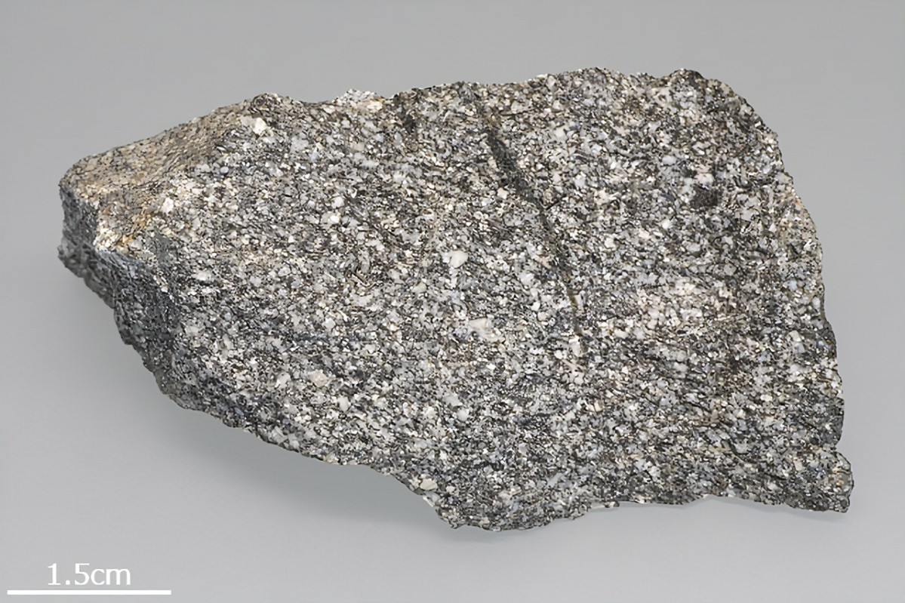
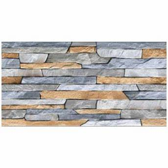

Diorite: The Coarse-Grained Igneous Rock
Chemical Formula: Primarily SiO₂ (Silicon Dioxide) with plagioclase feldspar, amphibole, pyroxene, and biotite minerals
Color: Grey, White, Black (Salt-and-Pepper Appearance)
Hardness: 5.5-6.5 on the Mohs scale
Crystal System: Phaneritic (intrusive igneous rock)
Localities: United States, Germany, Scotland, Italy, Peru
Common Uses: Construction material, decorative stone, sculptures, monuments
Diorite is a coarse-grained intrusive igneous rock formed when magma cools slowly beneath the Earth's surface, allowing large crystals to develop. It is classified as an intermediate rock, having a mineral composition that falls between mafic rocks like gabbro and felsic rocks like granite. Diorite is most easily recognized by its "salt-and-pepper" appearance, which results from the contrasting colors of its primary minerals: white or light plagioclase feldspar and dark amphibole or biotite. Its durability and aesthetic appeal make it a popular material in construction and art.
Diorite is less common than granite but is still found in significant amounts in various parts of the world, particularly in regions with volcanic activity. It has been used since antiquity, both as a functional building material and for ornamental purposes in sculptures and monuments.
Formation and Types of Diorite
Diorite forms from the slow crystallization of magma beneath the Earth’s surface. Its formation is typically associated with volcanic arcs and subduction zones, where oceanic plates are forced beneath continental plates. The magma that forms diorite is intermediate in composition, meaning it contains moderate amounts of silica and a balance of light and dark minerals.
Key Types of Diorite:
1. Leucodiorite
This variety of diorite contains a higher percentage of plagioclase feldspar and fewer dark minerals, giving it a lighter appearance compared to standard diorite.
2. Ferrodiorite
Rich in iron-bearing minerals like pyroxene and amphibole, ferrodiorite is darker in color and often found in regions with volcanic activity. It is typically harder and denser than other varieties.
3. Quartz Diorite

Quartz diorite contains quartz in addition to the standard plagioclase and dark minerals, giving it a more felsic composition and making it closer in composition to granite.
4. Microdiorite
A fine-grained variety of diorite, microdiorite forms when magma cools more quickly, resulting in smaller crystal sizes. It is often used in road construction and as a building stone.
5. Porphyritic Diorite

This type of diorite contains larger crystals known as phenocrysts embedded in a finer-grained groundmass. The phenocrysts typically consist of plagioclase feldspar or amphibole.
Structure and Properties of Diorite
Diorite is known for its coarse-grained (phaneritic) texture, with visible crystals of plagioclase feldspar, amphibole, and pyroxene. It often has a "salt-and-pepper" appearance due to the contrast between its light and dark mineral components. This texture and coloration make diorite distinctive and easily recognizable.
- Hardness: Diorite ranges from 5.5 to 6.5 on the Mohs scale, making it a hard and durable rock suitable for construction and sculpture.
- Color: Diorite is typically grey with a mix of white and black minerals, though it can range from nearly white (in leucodiorite) to dark grey or black (in ferrodiorite).
- Porosity: Diorite is generally dense and non-porous, making it highly resistant to weathering and erosion.
- Mineral Composition: Diorite is composed primarily of plagioclase feldspar, with significant amounts of amphibole, pyroxene, and biotite. Quartz may also be present in quartz diorite varieties.
Uses of Diorite
Diorite’s durability, hardness, and aesthetic appearance make it valuable for various applications, from construction to sculpture. Its historical use and continued importance in modern projects reflect its versatility.
1. Construction Material
Diorite has been used in construction for thousands of years. Its hardness and resistance to weathering make it ideal for both structural and decorative purposes.
Road Base and Aggregate: Diorite is crushed and used as an aggregate in road construction and as a base material for highways, railroads, and building foundations. Its strength helps provide a stable foundation in these projects.
Building Stone: Diorite blocks are used in both modern and historical architecture. Its durability ensures that buildings and monuments made from diorite can last for centuries. Examples include walls, floors, and facades in public buildings and homes.
2. Decorative and Architectural Stone
The distinctive appearance of diorite makes it popular as a decorative stone. It can be polished to a smooth, reflective finish, which enhances its aesthetic appeal.
Tiles and Countertops: Diorite is often cut into tiles for use in flooring and wall cladding. It is also used in countertops, where its hardness and resistance to scratching make it a durable option for kitchens and bathrooms.
Monuments and Sculptures: Diorite has been used since ancient times for monumental sculptures. One of the most famous diorite statues is the statue of King Gudea from ancient Mesopotamia, which was carved from a dark variety of diorite. Modern sculptors continue to use diorite for its fine-grained texture and durability.
3. Geological Research
Diorite plays an important role in understanding the processes of igneous rock formation and volcanic activity. Its intermediate composition provides insight into the conditions under which magma evolves and crystallizes.
Petrology and Tectonics: Geologists study diorite to understand the formation of volcanic arcs and the subduction processes that lead to its creation. Diorite’s presence often indicates past tectonic activity, such as the collision of oceanic and continental plates.
Unusual Varieties of Diorite
While most diorite is known for its typical salt-and-pepper appearance, certain varieties stand out due to their composition, texture, or the presence of rare minerals.
1. Orbicular Diorite

Orbicular diorite is a rare variety that contains rounded orb-like structures (orbicules) of concentric mineral layers. This visually striking rock is often used for decorative purposes.
2. Pegmatitic Diorite

This variety contains unusually large crystals, often forming in small pockets within a diorite body. Pegmatitic diorite can contain rare minerals that crystallize from the last remnants of magma, making it valuable for geological study and collectors.
3. Anorthositic Diorite

This diorite contains a high percentage of plagioclase feldspar, giving it a lighter color and a more uniform texture. It is used primarily in decorative stone applications.
Sourcing Locations of Diorite
Diorite is found in regions with volcanic activity, particularly in areas associated with convergent plate boundaries and subduction zones. Some of the world’s most famous diorite deposits are located in geologically active regions where magma from the Earth’s mantle has cooled slowly over millions of years.
- United States: Diorite is found in several regions of the U.S., particularly in the Rocky Mountains and the Sierra Nevada. It is used in construction and road building.
- Germany: The Black Forest region of Germany is known for its extensive diorite formations. Diorite from this area has been used in construction and sculpture for centuries.
- Scotland: Diorite is quarried in Scotland, particularly in the Highlands, where it has been used historically in the construction of buildings and monuments.
- Italy: Diorite is found in the Italian Alps and has been used in both ancient and modern architecture. Italian diorite is often used for decorative purposes in flooring and countertops.
- Peru: In the Andes Mountains, diorite is abundant, and the Incas used it extensively in their monumental architecture, including walls, temples, and fortresses.
Exploration and Mining of Diorite
Diorite deposits are typically located through geological surveys in regions with known volcanic or tectonic activity. Once identified, these deposits are mined for use in construction, road building, and decorative applications.
Exploration
Geologists use satellite imagery, field mapping, and rock sampling to identify potential diorite deposits. These deposits are often found near volcanic arcs or in mountain ranges formed by tectonic activity.
Mining Methods
Diorite is mined using open-pit quarrying methods. The rock is extracted in large blocks or crushed into smaller pieces for use in construction. In quarries, diorite blocks are often cut and shaped for decorative or architectural applications.
- Quarrying: Large blocks of diorite are extracted from quarries using diamond saws or blasting. The blocks are then cut into slabs or tiles for use in construction or decoration.
Processing
Once extracted, diorite is processed into various forms depending on its intended use. For construction, it is crushed into aggregate or cut into blocks. For decorative applications, diorite is often polished to bring out its natural colors and textures.
Metaphysical Properties of Diorite
Diorite is sometimes valued for its metaphysical properties, particularly in spiritual and healing practices. It is associated with strength, grounding, and protection, reflecting the rock's hardness and durability.
- Grounding and Stability: Diorite is believed to promote grounding and emotional stability. Its strength and density are thought to help individuals remain focused and balanced during stressful situations.
- Courage and Endurance: As a tough and resilient stone, diorite is often associated with courage and endurance. It is thought to provide support during challenging times and help individuals persevere in the face of adversity.
- Mental Clarity and Focus: Diorite is also linked to mental clarity and focus. It is believed to aid in concentration and decision-making, helping individuals stay organized and clear-headed.
Famous Finds and Diorite
Diorite has been used in some of the world’s most famous monuments and sculptures, dating back thousands of years. Its durability and distinctive appearance have made it a preferred material for artists and builders alike.
- The Statue of Gudea (Mesopotamia): One of the most famous diorite sculptures is the statue of Gudea, an ancient Sumerian ruler carved from dark diorite. The statue showcases the skill of ancient sculptors in working with this hard material.
- The Inca Walls (Peru): The Incas used diorite extensively in the construction of their fortresses, temples, and walls. The precise fitting of diorite blocks in structures like Sacsayhuamán near Cusco demonstrates their advanced masonry skills.
- Salisbury Cathedral (England): Diorite has been used in the construction of Salisbury Cathedral, one of the finest examples of early English Gothic architecture. The stone’s durability has helped preserve the cathedral’s structure for centuries.
Caring for Diorite
Diorite is a hard and durable stone, but it still requires proper care, especially when used in decorative or architectural applications. Regular maintenance can help preserve its appearance and extend its lifespan.
- Cleaning: Clean diorite surfaces with mild soap and water. Avoid acidic or abrasive cleaners, which can damage the stone's surface over time.
- Sealing: For outdoor applications or areas prone to moisture, diorite should be sealed to protect it from water damage and staining. This is particularly important for countertops and flooring.
- Handling: When installing diorite as flooring or countertops, ensure proper handling to avoid chipping or scratching. Using appropriate adhesives and installation techniques can help maintain the stone’s integrity.
Conclusion
Diorite is a versatile and durable igneous rock that has been used in construction and decorative applications for thousands of years. Its distinctive salt-and-pepper appearance, combined with its strength and durability, makes it a valuable resource for both modern and ancient architecture. Whether used as a building material, for sculptures, or in decorative projects, diorite remains an important and highly sought-after stone in geology, construction, and art.